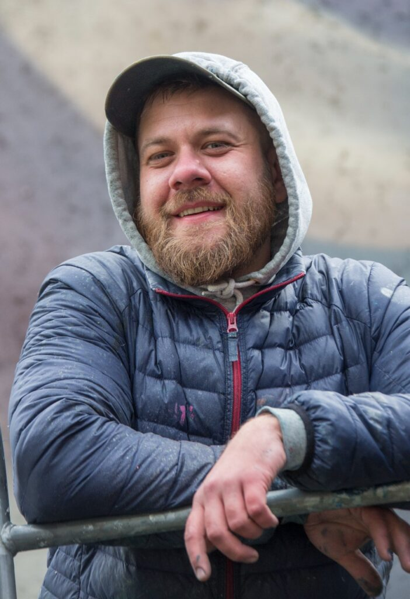
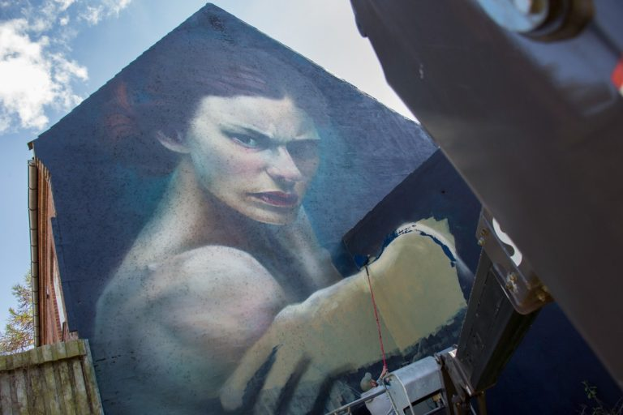

Repræsentered Kunstner
Jens Stentoft maler store figurative og realistiske malerier, som ofte har et glimt i øjet, en finurlig vinkel og et cartoony twist. Hans kreative arbejde kommer til udtryk gennem flere forskellige medier, men med sit primære og absolutte fokus på monumentale vægmalerier samt high-end tatoveringer.
Med mere end 15 års erfaring i bagagen har Jens transformeret alt fra massive industrisiloer og rå betonvægge til moderne erhvervsdomiciler over hele landet. Hans unikke evne ligger i at aflæse arkitekturen og skabe stedspecifik kunst, der integrerer sig naturligt med omgivelserne, uanset om opgaven kræver intens realisme eller legende, visuelle fortællinger.
Fremhævet Værk

Dette monumentale gavlmaleri forestiller en ekspressiv, vred kvinde, der bryder ud af facaden. Værket demonstrerer Jens' eminente evne til at kombinere intens, dramatisk realisme med rå kant og stor visuel gennemslagskraft i det offentlige rum.
HOUSE OF MURALIA varetager alle projektforespørgsler, kontrakter og logistik for Jens. Kontakt os med jeres idé og væg-dimensioner, så planlægger vi næste monumentale projekt sammen.
Book Jens Stentoft via Bureauet